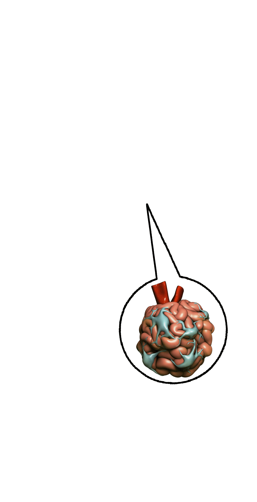
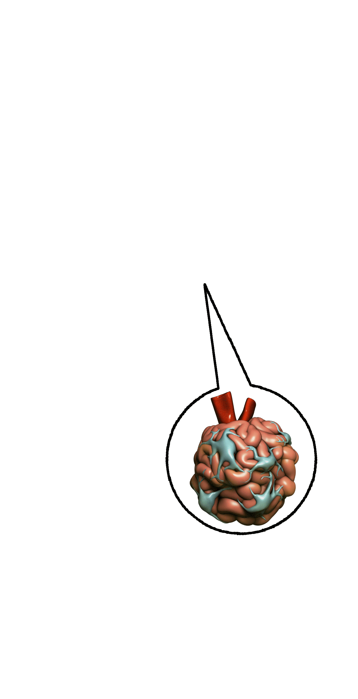

Visualizing Cells in the Human Body
HuBMAP lets us visualize healthy cells in the human body in ways the naked eye can't do on its own. With a mountain of data available to us, we can better understand the different roles these cells play in keeping everything running smoothly.
Using data expertise we can break down each organ into anatomical structures, functional tissue units (FTU), and cell types. The purpose of the three classes is to locate where in the body the cells are by identifying the organ, its smallest tissue unit that performs a unique physiologic function multiple times, and the cell types within that unit. From these perspectives, we can freely view the healthy human at multiple scales.
 

While some parts of the human body can be easily recognized, like the kidneys in the graphic above, many of us have no idea what the tissues and cells that make up a kidney look like.
The human reference atlas currently allows us to examine in some detail some of these cells. For instance: the renal corpuscle in the kidney.
In simple terms, the renal corpuscle is located in the kidney and works to filter out toxins through urine and reabsorb necessary nutrients back into your body.
Within this FTU, there are several cell types that depend on each other for it to function. The renal corpuscle is made up of even smaller parts like podocytes. Which, in turn, contain NPHS1 genes.
As it did for the renal corpuscle, HuBMAP also gives us the ability to map the crypt Lieberkuhn Glad in the large intestine in detail. There are several cell types that work together to allow this FTU to renew the lining of the intestine and produce mucus.
What you've just seen is a glimpse into the possibilities HuBMAP can create. Imagine how our understanding of human cells would accelerate if we did this for the entire body. From the crazy scales it can go to, to the in-depth analysis of each cell, the human reference atlas can heavily influence the advancement of human health and prospective research while serving as a convenient reference tool.
On that note, we invite you to check out Andreas Bueckle's VR Organ Gallery that will soon be available on the app store. The program is designed to be user-friendly in order to observe cells in 3D.